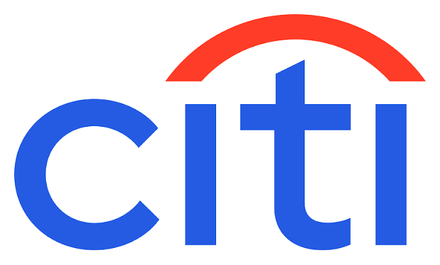

SRE & AI engineer.
SRE in the agentic world: validators, postmortems and on-call discipline, applied to systems that include agents.
I build AI systems for domains that resist automation — agents that need less trust, not more. Blind trust in an LLM is Morty trusting Rick: fine, right up until the episode turns dark.

PhD on proximal methods that reduce dimension on their own. Main takeaway: if the math isn't provable, the algorithm may fail somewhere — no matter how many experiments converged.
Tech lead of a PCB-router team built from zero: hiring, delegating, an integer geometry library from scratch. Exact science — no floating-point slack, and every algorithm judged on speed and optimality. Not a high-RPS service; the first time math had a deadline and a team.
Driver-position prediction on the road graph — the first thing I built that I could watch working from the back seat. −20% wrong assignments, −15% cancellations. Learned to listen to the business, take their metric and translate it into one the algorithm can optimise — no cost or cancellation counts inside the model.
Automation for reliable resource use across internal services. On-call, incident management, postmortems — failure turns out to be a domain like any other, and it formalizes. Lately that meant removing a single point of failure across ~2,000 services — an N+1 fix I designed and rolled out after agreeing it with seven teams — and an agent skill that keeps my service's operational knowledge in one place. Someone still has to own the outcome.
Lifting since 2020, first meet in 2021. Long cycles, slow progress, and the cost of over-reacting to one bad day.
Coaching one athlete since 2025 — competing since the same year. First on my own programmes adapted to his life, then on plans written with ChatGPT from the literature. The real work is the adjusting — his schedule, his sleep, what actually happened in the session, and whether last week's change was the right call.
PowerliftME — for people who chase the weight on the bar, not the abs in the mirror. It started as the tool I wanted for coaching: programmes, progression and honest logging, usable with no model installed. In progress: wiring the periodization engine to the live planner, and the plan linter. Coding agents are what made building it alone realistic.
The app's live planner generates sessions and adapts future training from your logs. A separate 16-week periodization engine is implemented and tested, but is not yet integrated with that planner. An on-device model explains values supplied by the app, with output checks for unsupported numbers.
Peer-reviewed, unlike this website. The optimisation years — where the habit of formalising first comes from.
| ID | Title | Year | Venue | Topic | Cited | Link |
|---|---|---|---|---|---|---|
| {{ p.id }} | {{ p.title }} {{ p.authors }} |
{{ p.year }} | {{ p.venue }} | {{ p.topic }} | {{ p.citedText }} | {{ p.linkLabel }} |
| Date | Talk | Where | Material |
|---|---|---|---|
| {{ t.date }} | {{ t.title }} | {{ t.where }} | {{ t.slidesLabel }} |
Links go to the talk pages of the 2016–2021 site (abstracts, dates, venues). Slide PDFs were never committed to the repo — they return once the files are added to /files/.
| Years | Course | Where | What | Materials |
|---|---|---|---|---|
| {{ c.years }} | {{ c.course }} | {{ c.where }} | {{ c.what }} |
Three years as a teaching assistant at UGA: numerical optimisation, convex and distributed optimisation, and the pre-MSc refresher. Before that, calculus at HSE and five years grading the Tournament of Towns.
Notes on things I built, tested, or got wrong. Where there is a result, the setup and the test come with it, and so does whatever is still unresolved — every experiment has its registry entry in the Lab. Published pieces are dated. Everything below the line in that list is a plan, not a draft I am hiding.
{{ essay.dek }}
{{ b.t }}
‹{{ b.t }}›
{{ b.t }}One page, A4. This is the print layout — the PDF is the same file. On a phone use Print, then Save as PDF; the browser's Share → PDF captures the screen instead, chrome and all.
Optimization PhD turned SRE turned applied-AI builder. I take folklore-heavy expert domains, formalize them into engines with validators, and put fine-tuned models to work inside — most recently a fully on-device AI coach, built and shipped solo. Reliability discipline from production SRE; mathematical rigor from a PhD in optimization. Where the work is public, the claim below links to it.
DesignSystem, LocalInference) — module boundaries the compiler enforcesPhD, applied mathematics — Université Grenoble Alpes, 2020
MSc, applied mathematics — HSE, Moscow, 2017
BSc, mathematics — HSE, Moscow, 2015
Competing powerlifter & coach
World Puzzle Championship — Russia first team when I can make the trip
Codeforces Candidate Master, earned pre-AI